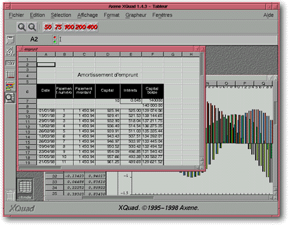
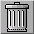

<!-- Documentation XQuad (c)1995-2000 AXENE contact axene@axene.org>
<html>

<head>
<title>General Interface</title>
</head>

<body BGCOLOR="#FFFFFF" BACKGROUND="Images/back.gif" TEXT="#000000">

<p ALIGN="right"> </p>

<p><br>
<br>
The most prominent window is called the main interface. All <a HREF="Document_Window.html">document</a>.
commands are executed from this window. <br>
<br>
</p>

<hr>

<p align="center"><br>
 <br>
<small><i>Screen shot: General Interface.</i></small></p>

<p><br>
</p>

<hr>

<p><br>
</p>

<p><b><font SIZE="4">The main interface is set up vertically and horizontally:</font></b> 

<ol>
  <li><a NAME="menu_bar">The <b>menu bar</b> contains the following roll-down menus:</a><ul>
      <li><a HREF="Menu_File.html">Menu <i>&quot;File&quot;</i></a>. </li>
      <li><a HREF="Menu_Edit.html">Menu <i>&quot;Edit&quot;</i></a>. </li>
      <li><a HREF="Menu_Selection.html">Menu <i>&quot;Selection&quot;</i></a>. </li>
      <li><a HREF="Menu_View.html">Menu <i>&quot;View&quot;</i></a>. </li>
      <li><a HREF="Menu_Format.html">Menu <i>&quot;Format&quot;</i></a>. </li>
      <li><a HREF="Menu_Graph.html">Menu <i>&quot;Graph&quot;</i></a>. </li>
      <li><a HREF="Menu_Window.html">Menu <i>&quot;Window&quot;</i></a>. </li>
      <li><a HREF="Menu_Help.html">Menu <i>&quot;Help&quot;</i></a>. <br>
        &nbsp; </li>
    </ul>
  </li>
  <li><a NAME="horizontal_icon_bar">Many commands on the active document are executed from the
    <b>horizontal menu bar buttons</b>. The options available on this horizontal bar vary
    depending upon which vertical toolbar button is engaged.</a><br>
    &nbsp; </li>
  <li><a NAME="edit_bar">The </a><a HREF="Edit_Bar.html"><b>Edit Bar</b></a> allow the user to
    enter data (value, formula, text...) for the active cell.<br>
    &nbsp; </li>
  <li><a NAME="vertical_icon_bar">There are two types of buttons offered on the <b>vertical
    toolbar</b>: a series of buttons used to change the options offered on the horizontal
    toolbar, and the single &quot;Trash&quot; icon. Descriptions of these buttons follow:</a><br>
    &nbsp; <ul>
      <li> <a NAME="misc_vbar">The first
        button shifts the horizontal toolbar to </a><a HREF="HBar_Misc.html">'General Functions'</a>
        mode. .<br>
        &nbsp;&nbsp; </li>
      <li> <a NAME="font_vbar">The second
        button shifts the horizontal toolbar to </a><a HREF="HBar_Font.html">'Font manipulations'</a>
        mode. . <br>
        &nbsp; </li>
      <li> <a NAME="text_vbar">The third
        button shifts the horizontal toolbar to </a><a HREF="HBar_Text.html">'Text manipulations'</a>
        mode. . <br>
        &nbsp; </li>
      <li> <a NAME="ornament_vbar">The
        fourth button shifts the horizontal toolbar to </a><a HREF="HBar_Ornament.html">'Cell
        Ornament'</a> mode. . <br>
        &nbsp; </li>
      <li> <a NAME="graphic_vbar">The
        fifth button shifts the horizontal toolbar to </a><a HREF="HBar_Graphics.html">'Graphic
        manipulation'</a> mode. . <br>
        &nbsp; </li>
      <li><a NAME="zoom_vbar"> The sixth
        button shifts the horizontal toolbar to </a><a HREF="HBar_Zoom.html">'Zoom'</a> mode. . <br>
        &nbsp; </li>
      <li><a NAME="trash_vbar"> The last
        button is the &quot;Trash&quot;. It is used to remove a selection from the active
        document.<br>
        &nbsp;&nbsp; </li>
    </ul>
  </li>
  <li></a><a NAME="worktop">Open </a><a HREF="Document_Window.html">documents</a> are
    displayed on the <b>desktop</b> and may take on one of three forms:<br>
    &nbsp; <ul>
      <li><a NAME="document_window">A regular window which can be deleted, moved, or re-sized on
        the desktop.</a><br>
        &nbsp; </li>
      <li><a NAME="document_icon">A movable icon on the desktop. Double-clicking on the document
        icon displays the document as a regular window.</a><br>
        &nbsp; </li>
      <li><a NAME="document_maximized">A maximum window filling the entire desktop space. Clicking
        on the small button at the upper right corner switches the document back to a regular
        window. Maximum Window is the default setting when a document is first opened in XQuad.</a><br>
        &nbsp; </li>
    </ul>
  </li>
  <li><a NAME="hint_line">The <b>status bar</b> continuously displays the current command mode
    and gives basic information about buttons on XQuad toolbars. When the cursor is
    placed over a button, a description of it's main function appears in the status bar.
    Although displayed by default, this bar can be hidden or displayed again from the </a><a
    HREF="Menu_View.html#hint_line_menu_entry"><i>&quot;View&quot; menu </i></a>. </li>
</ol>

<p><br>
</p>

<hr>

<p ALIGN="right"></p>
</body>
</html>
